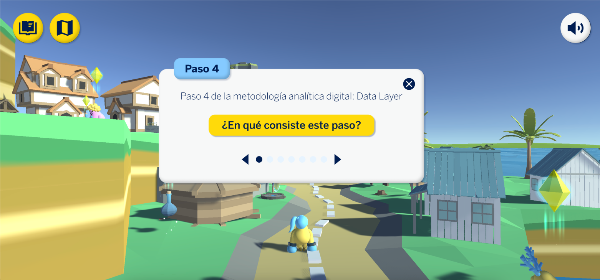
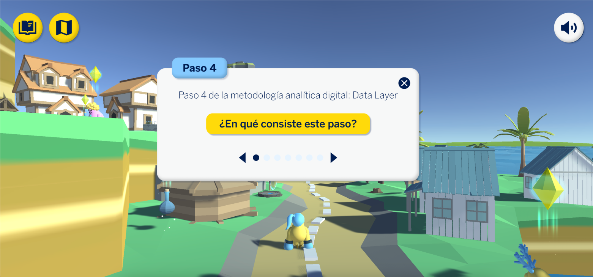

Working at BBVA
product, graphic, ux/ui, behavioral, future designer

The journey has been intense and exciting, with many opportunities, projects and people from many teams such as research, business, data, marketing, development, T&C, etc. But there are 2 projects that I am especially proud of.
*Due to confidentiality issues, to learn more about other projects, let me invite you to a coffee.

Data lovers
Mayrit
I have had the opportunity to work on qualitative and quantitative research alongside the RCP research team and The Cocktail analysis, as well as in the review phases with A/B testing for users and redesign of flows for different geographies.
I have used various methodologies, such as:
keep imagining
It is an installation exhibited at the Central de Diseño in Matadero for the Mayrit Design and Architecture Biennial. I worked alongside the Future designers team, DavidDeDavid and the BBVA futures observatory.
Goal: To explore, through futures design, what relationships will look like in 2048, raising awareness and prompting reflection on our interaction with the environment through technology.
Role: search and grouping of trends, creation of a futures wheel, development of 2 future scenarios and animation of the interaction with the artifact.

Learn playing
Data Lovers is a training program on the use of data for the BBVA Design team. I worked alongside the Future designers and Three Axis team
Goal: Be a reference in the graphic representation of data, creating inspiring narratives that humanize the information and allow designers to be co-protagonists in decisions based on data that positively impact BBVA employees' lives.
Role: Research and definition of the insight, creation of moodboards, badges, the logo and style guide
 
